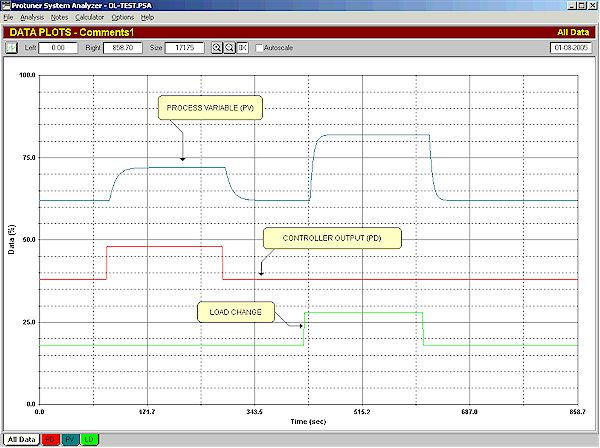
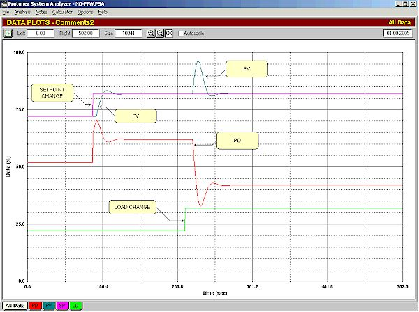
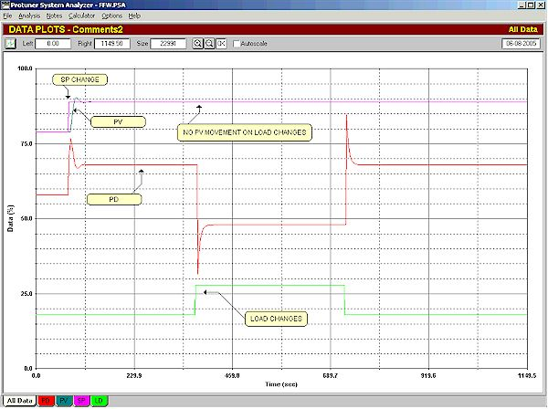
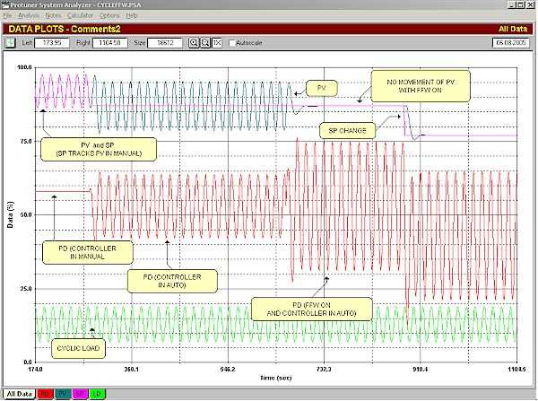
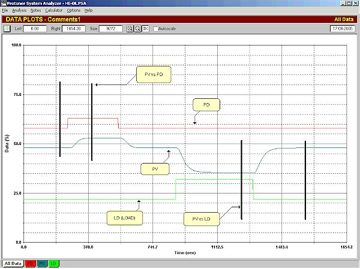
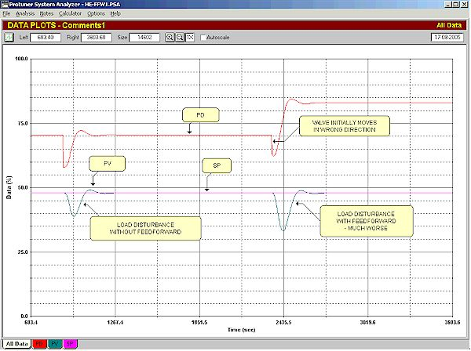
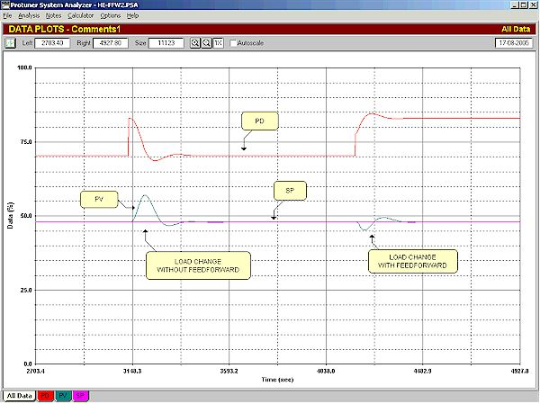

| [Home] [About us] [Contact us] [Training] [Optimisation services] [Protuner] |
| [Loop signatures] [Case histories] [Continuous loop performance monitoring] |
|
Loop Problem Signatures Part 2 Feedforward control - part 3 In the previous articles in this series, the basic theory behind feedforward control was discussed, and it was also shown how to apply feedforward in practice. In this article it will be shown how well feedforward can work in practice, by giving a couple of examples. The first example is with extremely simple process and load transfer functions, having very simplistic first order lag, dead time, self-regulating dynamics. I know this is not really practical, and that one would be unlikely in real life to be applying feedforward to such simple systems, but the reason I have used this is to "prove by example" that feedforward theory in reality is 100% correct, and how well it can work. The second example will be a system with much more complicated dynamics, and will again show how even imperfect feedforward really improves matters. Example 1: Simplistic Dynamics Figure 1 shows the open loop test performed on the system.  Figure 1 Firstly keeping the LD (load) constant, a step was made on the PD (process demand, i.e. feedback controller output). Next with a constant PD, a step was made on the LD. From this test it is easy to determine the gain, the deadtime and the time constant for both the test of the PV vs. the PD, and for the test of the PV vs. the LD. (The dynamics can be obtained either graphically as described in Chapters 2, 3, and 4 of my Basic Troubleshooting and Loop tuning CD, or else Protuner users can get them directly from the Loop Signature of the tuning report. The tuning of the feedback controller was obtained from the Protuner, and was of course taken from the PV vs. the PD test.) The dynamics were found to be:
Now from the previous articles the tuning of the feedforward controller will be: Gain = PGL/PGP = 2/1 = 2 Lead = TCP = 10 seconds Lag = TCL = 5 seconds Delay = DTL – DTP = 10 – 5 = 5 seconds Figure 2 shows a test without the feedforward. A setpoint change was first made and the PV followed it fairly well. Then a 10% step was made in the load disturbance. It caused a huge upset with a big fluctuation of the PV. The feedback control could not deal with it at all well.  Figure 2 The same test is repeated in Figure 3, but this time the feedforward has been switched on. It is absolutely incredible! There was not the slightest deviation in the PV when the load step was made. This illustrates how perfectly feedforward works in ideal conditions.  Figure 3 To give an even better idea of the power of feedforward refer to Figure 4. This is a test on the same system, but in this case the load change is being introduced as a cycle with a period equal to the ultimate period of the process. In Chapter 22 of the above referenced CD, a description was given as to how feedback control loops respond to cyclical disturbances at different frequencies. It will be remembered that the variance in automatic can be as much as twice the variance in manual with disturbances at frequencies near the ultimate period of the loop.  Figure 4 At the start of the test shown in Figure 4, the feedback controller is in manual, and feedforward is off. It can be seen what a large cycle occurs on the PV. After a while the controller is switched into automatic. The effect is really bad. The amplitude of the cycle on the PV has doubled, showing how the feedback control is completely unable to cope with the cycle at that frequency. A little later the feedforward is switched on. It immediately caught the disturbance and the PV trace is now a straight line. A short while later a setpoint change was made. The PV responds exactly as it would have if there was no cyclic disturbance occurring. This is a really dramatic illustration of exactly how powerful feedforward is.
Example 2: Complex Dynamics In this example the process transfer function has five first order lags of equal magnitude. Later on in this series it will be shown how difficult it is for PID to control this type of dynamic really well. It is a very difficult class of dynamics. The load transfer function has three first order lags. Also not nice. Figure 5 shows the open loop tests performed to make the models and get the feedback tuning.  Figure 5 Now using exactly the same simplistic first order modelling as was used for the previous very simple example, the following dynamics and tunings were obtained:
The tuning of the feedforward controller will be: Gain = PGL/PGP = 1.25/1 = 1.25 Lead = TCP = 26.1 seconds Lag = TCL = 46.2 seconds Delay = DTL – DTP = 8.5 – 32 = - 23.5 seconds. But we have to set this delay equal to zero, as we cannot have negative time . In this example we have to be very careful of the action of the feedforward controller. The process is actually very similar to the heat exchanger shown in the previous two loop signatures. Referring to the open loop tests shown in Figure 5, we see that when the PD (steam valve) was stepped up, the PV (temperature) increased. When the LD (process flow through the exchanger) was stepped up, the PV (temperature) decreased. Therefore when we have an increase in load, we must ensure the feedforward action opens the steam valve to increase the temperature. In Figure 6 the feedback controller is in automatic. Initially the feedforward is off. When a load disturbance occurred (LD signal not shown), there was large excursion of the PV from setpoint, as the feedback control could not catch the disturbance. Next, the feedforward was switched on, and another load disturbance made, but the feedforward action was applied incorrectly, so the valve started closing initially, instead of opening. As a result the control variance is much worse in this case with the feedforward on.  Figure 6 Figure 7 shows the same test but this time the feedforward action has been applied correctly. And it can be seen that although not perfect, the feedforward has really improved matters, probably by at least an order of a magnitude.  Figure 7 Remember that in this case the process has five lags and the load has three. We have tried to cancel out the effects of load changes with really simplistic first order lag, deadtime models. To make matters worse, the delay could not be used, as it was negative. However in spite of all these difficulties, the feedforward really helped. Just out of interest, the vast majority of feedforward systems implemented in real life don't even bother with leads, lags and delays, but only use feedforward with a gain element. The moral of the story is that in cases where the feedback control cannot deal with the effects of load changes, normally even some feedforward is better than none! It should be pointed out that if you have the tools available that can help you make more complex models, like the Protuner with its modelling feature, there is nothing to stop you creating much more powerful feedforward compensators, with as many leads and lags as you like. Good modern control equipment, like most DCS systems, allows you to insert as many of these blocks as you wish. To summarise; feedforward offers the following great advantages:
A final point to note is that feedforward is not limited to a single type of load upset. You can feedforward as many load signals as may be required, but obviously the load upsets must be measurable. Michael
Brown is a specialist in control loop optimisation, with many years of
experience in process control instrumentation. His main activities are
consulting, and teaching practical control loop analysis and
optimisation. He gives training courses which can be held in clients'
plants, where students can have the added benefit of practising on live
loops. His work takes him to plants all over South Africa, and also to
other countries. He can be contacted at:
|